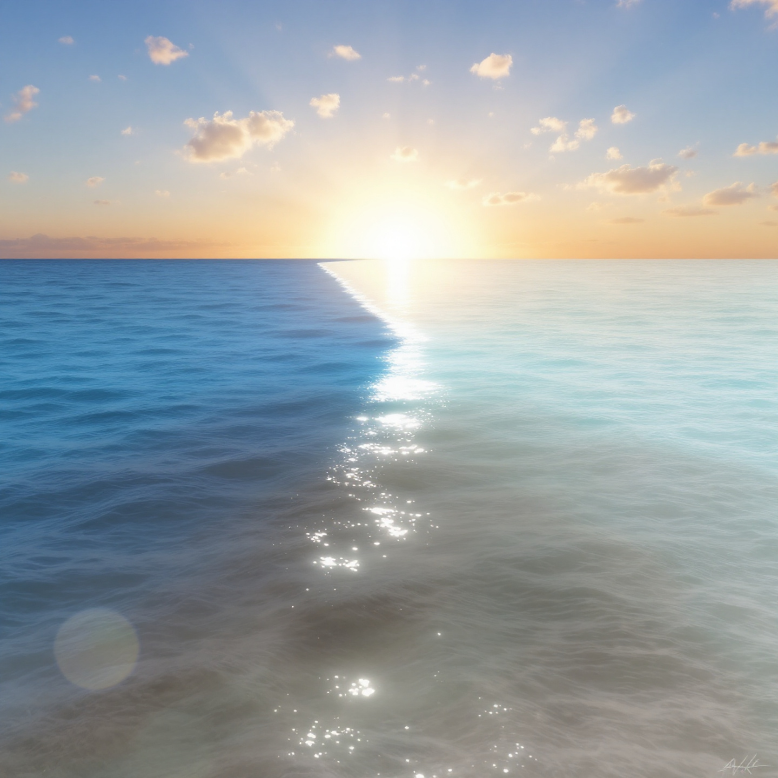

الإعجاز في علم البحار والمحيطات يظهر في القرآن الكريم من خلال آيات تشير إلى حقائق علمية لم تكن معروفة في وقت نزوله. إليك بعض الأمثلة البارزة:الحاجز بين المياه العذبة والمالحة
: تشير الآية الكريمة
﴿ وَهُوَ الَّذِي مَرَجَ الْبَحْرَيْنِ هَذَا عَذْبٌ فُرَاتٌ وَهَذَا مِلْحٌ أُجَاجٌ وَجَعَلَ بَيْنَهُمَا بَرْزَخًا وَحِجْرًا مَحْجُورًا ﴾). سورة الفرقان: آية 53 (
تفسر هذه الآية ظاهرة مدهشة لاحظها العلماء وهي وجود "برزخ" أو حاجز بين مياه البحار والمحيطات المالحة وبين مياه الأنهار العذبة عند التقاء الاثنين. هذا الحاجز يمنع اختلاط المياه المالحة بالعذبة بشكل كامل، في حين يسمح بانتقال بعض العناصر بينهما. تم تأكيد هذه الظاهرة علميًا من خلال دراسات تتعلق بالكثافة والملوحة والخصائص الكيميائية للمياه عند تلاقي المسطحات المائية.
كذلك في سورة الرحمن (55:19-20):
: النص القرآني
﴿مَرَجَ الْبَحْرَيْنِ يَلْتَقِيَانِ * بَيْنَهُمَا بَرْزَخٌ لَا يَبْغِيَانِ ﴾ .
التفسير: تؤكد هذه الآية على وجود برزخ بين البحرين، وهو حاجز يمنع أحدهما من التغلب على الآخر أو اختلاطهما بشكل كامل.
المراجع التفسيرية:
تفسير القرطبي: يشرح أن البرزخ هو حاجز طبيعي يمنع اختلاط المياه العذبة والمالحة، ويشير إلى أن هذا النظام هو من صنع الله.
الظاهرةالعلمية:
في علم المحيطات، تُعرف هذه الظاهرة بوجود "الطبقات المائية" أو "الحدود المائية" حيث تلتقي المياه العذبة والمالحة في مصبات الأنهار والمحيطات. هذه الحدود تمنع الاختلاط الكامل بسبب اختلاف الكثافة والملوحة ودرجة الحرارة.
التفسيرالعلمي:
عندما تلتقي المياه العذبة من الأنهار بالمياه المالحة في البحار، تتشكل منطقة انتقالية تُعرف بالبرزخ. هذه المنطقة تتميز بتدرج في الملوحة والكثافة، مما يمنع الاختلاط الفوري للمياه.
تُظهر الدراسات البيئية كيف أن هذه المناطق تعتبر غنية بالتنوع البيولوجي وتلعب دورًا هامًا في النظام البيئي البحري.
المراجعالعلمية:
"Oceanography: An Invitation to Marine Science"للمؤلف توم جورمان، الذي يشرح كيفية تشكل الطبقات المائية وتأثيرها على البيئة البحرية.
ظلمات البحر العميق
: في سورة النور، تقول الآية
﴿ أَوْ كَظُلُمَاتٍ فِي بَحْرٍ لُجِّيٍّ يَغْشَاهُ مَوْجٌ مِّن فَوْقِهِ مَوْجٌ مِّن فَوْقِهِ سَحَابٌ، ظُلُمَاتٌ بَعْضُهَا فَوْقَ بَعْضٍ إِذَا أَخْرَجَ يَدَهُ لَمْ يَكَدْ يَرَاهَا﴾) سورة النور: آية 40 (.
هذه الآية تصف ظاهرة "ظلمات البحر العميق"، حيث تتزايد الظلمة كلما زاد العمق في البحار والمحيطات. وقد أكد العلم الحديث أن الضوء لا يمكنه اختراق المياه لأعماق تتجاوز 200 متر، مما يؤدي إلى ظلمات متراكبة نتيجة انعدام الضوء في هذه الأعماق. بالإضافة إلى ذلك، هناك تيارات مائية عميقة تتحرك بشكل منفصل عن التيارات السطحية، وهو ما يشير إليه القرآن باستخدام تعبير "موج من فوقه موج".
الظاهرة العلمية:
في البحار العميقة، تقل كمية الضوء بشكل كبير مع زيادة العمق. على عمق حوالي 200 متر، يبدأ الضوء في التلاشي، وفي الأعماق التي تتجاوز 1000 متر، يكون الظلام شبه كامل.
الموجات الداخلية: تشير الآية إلى وجود موجات فوق موجات، وهو ما يتوافق مع ما يعرف بالموجات الداخلية في المحيطات، التي تحدث بين طبقات المياه ذات الكثافات المختلفة.
السحب: السحب تحجب الضوء القادم من الشمس، مما يساهم في زيادة الظلمة في الأعماق.
المراجع العلمية:
"Introduction to Physical Oceanography" للمؤلف روبرت ستيوارت، الذي يشرح كيفية تفاعل الضوء مع مياه البحر وكيفية تشكل الموجات الداخلية.
دراسات في علم المحيطات: توضح كيف أن الضوء لا يخترق سوى الطبقات السطحية من المحيط، مما يخلق ظلامًا في الأعماق.
كتب التفسير:
تفسير ابن كثير: يوضح أن هذه الآية تشير إلى الظلمات المتراكمة في البحر العميق، ويشرح كيف أن هذه الظلمات تتكون من عدة طبقات.
تفسير الطبري: يقدم تفسيرًا للآية يركز على الظواهر الطبيعية التي تؤدي إلى الظلمات في البحار العميقة.
كتب الإعجاز العلمي:
"الإعجاز العلمي في القرآن والسنة" للدكتور زغلول النجار: يناقش هذا الكتاب الإشارات العلمية في القرآن، بما في ذلك وصف ظلمات البحر العميق، ويقدم تفسيرًا علميًا لهذه الظاهرة.
الخلاصة
تُظهر هذه الآية كيف أن القرآن الكريم أشار إلى حقائق علمية لم تكن معروفة في زمن نزوله، مثل ظلمات البحر العميق والموجات الداخلية. هذه الظواهر الطبيعية، التي تم تأكيدها من خلال الدراسات العلمية الحديثة، تُظهر الدقة في وصف القرآن للظواهر الطبيعية.